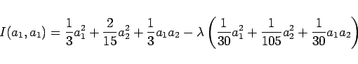

Zur praktischen Lösung von Variationsproblemen werden im wesentlichen zwei Lösungswege verwendet.
| Beispiel |
|
Das isoperimetrische Problem |
| (10.52) |
bei
| (10.53) |
ist numerisch zu lösen. Das zugehörige Variationsproblem ohne Integralnebenbedingung lautet gemäß Variationsaufgaben mit Nebenbedingungen
Als Ansatz für die Näherungslösung wird
|  | (10.56) |
über, und die notwendigen Bedingungen ergeben das homogene lineare Gleichungssystem
Dieses System hat nichttriviale Lösungen, wenn die Koeffizientendeterminante verschwindet. Daraus folgt:
| (10.58) |
Für erhält man aus (10.57) beliebig, so daß die zu gehörende, normierte Lösung lautet:
Zum Vergleich kann man die zur Variationsaufgabe (10.57) gehörende EULERsche Differentialgleichung aufstellen. Man erhält die Randwertaufgabe
| (10.60) |
mit den Eigenwerten und den Eigenlösungen . Für den Fall  , d.h. , ergibt sich die normierte Eigenlösung
, d.h. , ergibt sich die normierte Eigenlösung
 |
(10.61) |
deren Verlauf sich nur unwesentlich von dem der Näherungslösung (10.59) unterscheidet.
Hinweis: Beim heutigen Stand der Computer- und Software-Entwicklung sollte man zur numerischen Lösung von Variationsproblemen vor allem die Methode der finiten Elemente (FEM) einsetzen.
Die Grundzüge der Methode der finiten Elemente werden bei der numerischen Behandlung von Differentialgleichungen beschrieben. Dort wird der Zusammenhang zwischen Differential- und Variationsgleichungen, der z.B. durch EULERsche Differentialgleichungen oder Bilinearformen gemäß (19.145a,b) vermittelt wird, ausgenutzt.
Auch die Gradientenverfahren, wie sie zur numerischen Behandlung von nichtlinearen Optimierungsaufgaben verwendet werden, können zur numerischen Lösung von Variationsaufgaben eingesetzt werden.